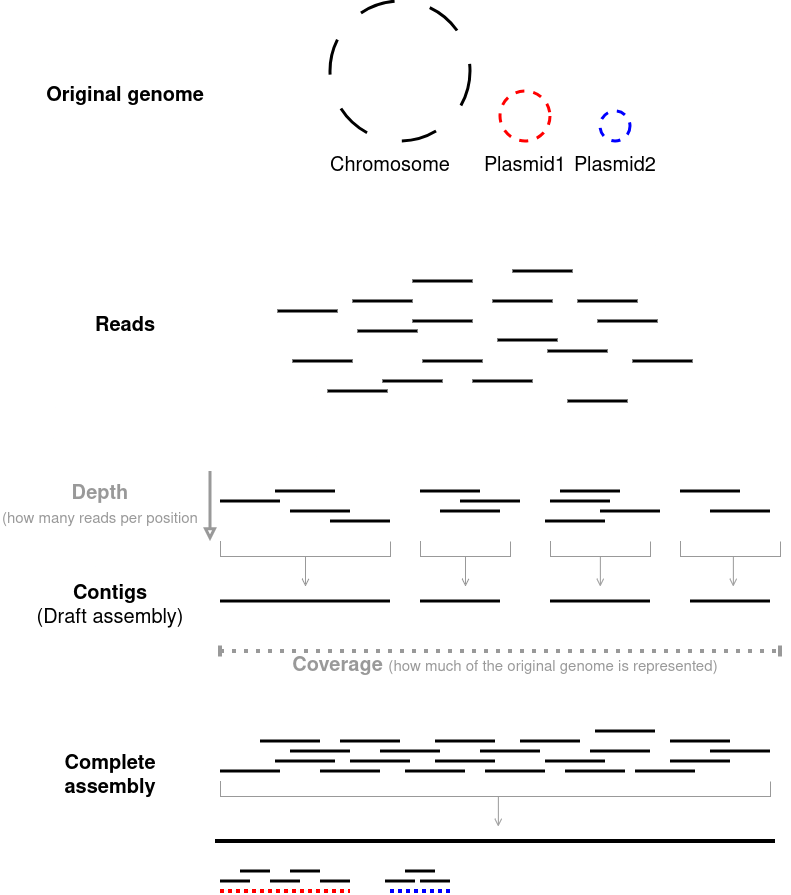

Module 2
Introduction to Genomics
Typical genomics workflow:
A very generalized genomics workflow would comprise the following -
We will go through the reasoning for each of these steps and try out some common bioinformatics tools for each.
How does sequencing work?
Depending on the exact platform used, sequencing takes advantage of specific physical and/or chemical properties of different nucleotides. These physical/chemical properties are converted to signals that can be decoded by different algorithms to determine the DNA (or RNA) sequence. The exact workings of each sequencing platform is beyond the scope of this workshop. There are several great videos that explain the different sequencing technologies better than I ever can, I highly recommend checking them out if you are interested.
What sequencing platform should I use?
- For most microbial sequencing purposes, Illumina short-read sequencing is the most common, especially for large number of samples
- However, due to the decreasing costs, long-read sequencing, especially from ONT (Oxford Nanopore Technologies) is becoming more common.
- In general, my recommendation is:
- If you have a lot of samples (tens to hundreds) go for Illumina (cheapest per sample)
- If you have a handful of high-value samples (eg: very rare organism, time-sensitive early outbreak scenarios), go for ONT but watch out for potential sequencing errors. (more expensive)
- If you have one or two samples that are of critical importance (for example your entire research project is based on this one strain) - perform hybrid sequencing (most expensive). Hybrid seqencing involves performing both Illumina short-read and ONT/PacBio long-read and combining reads from both to get the highest quality assembly possible. However, the quality of long-read sequencing is increasing so rapidly that long-read sequencing alone may be enough to get a high-quality complete assembly.
This workshop is geared towards Illumina Paired-end sequencing data as those are the most common
Genomics workflow
Some basic terminology
Reads
- Short strings of sequences that represent a highly fragmented version of the original genome.
- Raw unprocessed output from the sequencer.
Contigs
- Overlapping reads are stitched together to make “contiguous” strings of DNA.
- The more overlapping reads that are stitched, the longer the contig(s) will be and the fewer contigs you will have.
- In an ideal scenario, a single chromosome will be a single contig.
- A collection of contigs for a given genome will be your assembly
Coverage
- The percentage of your original genome that is covered by the reads
- 100% coverage means for every nucleotide in the original genome, there is at least one read that represents it.
- For smaller genomes (eg: microbial) the coverage will almost always be 100% so it is assumed by default.
Depth
- The average number of reads a given nucleotide in the is represented in.
- 30x depth means on average a any given nucleotide is present in 30 reads.
- Sometimes you might see something like “30x coverage” in many microbial papers. This means 100% of the genome is represented at a depth of 30x (“coverage” is assumed to be 100%).
Draft genome/draft assenbly
- Most genome assemblies you will be working with are “draft” assemblies, meaning it is not a complete representation of the original genome, the assembly comprises multiple contigs that have not been perfectly stitched together.
Closed assembly/complete assembly
- If you perform long-read/hybrid sequencing you will have enough information in your reads to assemble the complete genome as a single continuous string with no breaks or gaps. This is referred to as a ‘closed’ or ‘complete’ genome assembly.
- Typically, bacteria have a single circular chromosome (some bacteria have multiple) and optionally some plasmids. When an assembly is referred to as ‘closed’ or ‘complete’, it means each chromosome and each plasmid (if any) is represented by a single contig respectively.

Raw reads and quality control
- Raw reads are what you get directly out of the sequencer.
- Raw reads are in FASTQ format ( See file formats in Module 0 ).
- For Illumina Paired-end sequencing, you get two FASTQ files - the forward (
R1) and reverse (R2) reads.- Each fragment of DNA is sequenced twice, one from each end (i.e forward and reverse, or
R1andR2).
- The information that connects each read in
R1to its mate inR2is kept intact in the FASTQ files.
- Each fragment of DNA is sequenced twice, one from each end (i.e forward and reverse, or
- For each read, the FASTQ files also have per-base quality scores
- The purpose of quality scores are straightforward - you want to know if the basecalling (i.e assigning the correct nucleotide base at the correct position for each read fragment) is good.
- Using the quality scores, you can filter for only high-quality reads, and/or “trim” off lower quality sections in each read before you move to the next steps.
Read quality control - what should I look for?
- Per-base sequence quality - You dont want too many low quality base calls
- Adapter removal - Adapters are artificial short sequences ligated to your samples’s actual DNA to help with the sequencing process. These adapters must be removed as they are not biologically significant
- Average per-read quality - On average you want to keep only high quality reads
- N content - During basecalling,
Nis assigned (instead ofA,T,G,C) if the basecaller is uncertain. You want to know how many uncertain calls were made - Read length distribution - Reads that are too short are uninformative. Each read is expected to be ~150bp for Illumina
EXERCISE: Sequence quality control using fastp
Lets download some raw reads and see what they look like
The Sequence Read Archive (SRA) or European Nucleotide Archive (ENA) are repositories from where we can download raw sequence reads.
Lets download raw reads for the sample
SRR32528508- Activate your conda environment if you haven’t already
conda activate NWU_2025_workshop- Use the software
fasterq-dumpto download the specific sample
fasterq-dump SRR32528508
If you have performed the setup.sh step in Module0 , the files should be present in NWU_2025_workshop_data/test_datasets/fastq_download/
Use the
headcommand you learned before to examine the first few lines of the fastq fileLets now remove potential low quality reads and perform adapter trimming using
fastp- First, lets check how to use
fastpusing the--helpcommand. - Just like the built in command line tools, pretty much every bioinformatic software you install will also have a
helppage with instructions on how to use the tool - While the concept will largely be the same, the exact syntax for using each software will differ slightly.
- That is why it is very important to read these instructions every time you attempt to use a tool
fastp --help- First, lets check how to use
Based on the
--helppage, we can see that the essential requirements for runningfastpare:ior--in1: Paired-end read 1 (R1) file as inputIor--in2: Paired-end read 2 (R2) file as inputoor--out1: Name of quality-filtered paired-end read 1 (R1) output fileOor--out2: Name of quality-filtered paired-end read 2 (R2) output file
fastpwill also generate a QC report, by default the files will be calledfastp.htmlandfastp.json, but we can rename those files using the--htmland--jsonparameters.There are many other options, feel free to go through them, but for our purposes there is no need to change anything else.
Now we can run
fastpon our samplefastp \ --in1 NWU_2025_workshop_data/test_datasets/fastq_download/SRR32528508_1.fastq \ --in2 NWU_2025_workshop_data/test_datasets/fastq_download/SRR32528508_2.fastq \ --out1 NWU_2025_workshop_data/test_datasets/fastq_download/SRR32528508_1_trimmed.fastq \ --out2 NWU_2025_workshop_data/test_datasets/fastq_download/SRR32528508_2_trimmed.fastq \ --html NWU_2025_workshop_data/test_datasets/fastq_download/SRR32528508_trimmed.html \ --json NWU_2025_workshop_data/test_datasets/fastq_download/SRR32528508_trimmed.jsonIn the above command, we gave the PATH to our our input reads to
fastpthrough thein1andin2parameters, specified the names of the output files and the PATH in which they should be saved through theout1andout2parameters, along with the QC reports using--htmland--jsonOpen the
.htmloutput in your browser and take a look at the results.
\ before every new parameter in the code?
When you are writing commands on the command line, you can supply all the necessary arguments for whatever tool you are using continuously in one line (separated by spaces). For the sake of readability, I have split them into multiple lines. But when you simply enter a newline (i.e, press the enter key), the shell will assume you want to run your command and can lead to you running an incomplete command. Typing \ before you press enter lets the shell know that you aren’t done yet and you are continuing with the same command.
Genome assembly
What is genome assembly and why do it?
- The output from a sequencing machine contains large numbers of fragments (reads) of your original genome in no particular order.
- These reads are quite short (~150bp with short read sequencing) - too short to obtain a lot of meaningful information as most genes are much longer than 150bp.
- The same region of the genome will be repeated multiple times (depth)
- Your whole original genome might not be represented (coverage)
- Assembling your reads involves stitching together these fragments (in the right order) to create the closest possible representation of the original genome.
Reference-based vs de novo assembly
Reference-based assembly
- Advantages:
- More complete final assembly
- Fewer contigs and longer contigs, meaning less fragmentation
- Disadvantages:
- The assembled genome will be biased towards the reference.
- Large insertions and rearrangements in your assembly will be lost as the reference might not have them (or have them at different locations).
- Use reference-based assembly if:
- You think your genome is very closely related to an available reference
- You made/evolved a mutant of your reference and want to confirm it
- You know the genetic background of your genome and want to align it to an available reference of the same genetic background
- Tools: bwa, bowtie2
De novo assembly
- Advantages:
- Unbiased assembly
- Will preserve “new” sequences in your genome that a typical reference might not have
- Disadvantages:
- May be lower quality assemblies
- Will have many contigs and shorter contigs
- It is very hard to resolve repetitive regions on your genome
- Use de novo assembly if:
- You do not know the genetic background of your genome
- You think your genome varies substantially from available reference genomes
- Tools: SPAdes, SKESA
In most pathogen-genomics cases, de novo assemblies are the way to go
In most cases, yes. But remember that the assembly is a “consensus” of all the reads. So not all the information available in the reads will be represented in the final assembly. For example if you have low-abundance subpopulations in your samples, your assembly will only represent the sequence from the majority population.
EXERCISE: Sequence assembly using shovill
Similar to
fastp, lets look at the usage instructions forshovillshovill --helpBased on the
--helppage, we can see that the essential requirements for runningshovillare:--R1: Paired-end read 1 (R1) file as input--R2: Paired-end read 2 (R2) file as input--outdir: Path to the output directory that will be created to store outputs
shovillis actually a software that comprises multiple other software. This type of tool is commonly referred to as a WRAPPER.In this case,
shovillis not the name of the actual assembly software, but it lets us choose between multiple assembly software.Let us choose
skesaas the assembler. The default is another tool calledspadesbutskesais faster--assembler: Option to choose assembler, set toskesa
Genome assembly tools may also use a lot of CPU and RAM, if you are running this on your personal computer, you many not have a lot of resources to spare, so it is a good idea to limit this using the
--cpusand--ramparametersPutting it all together:
shovill \ --R1 NWU_2025_workshop_data/test_datasets/fastq_download/SRR32528508_1_trimmed.fastq \ --R2 NWU_2025_workshop_data/test_datasets/fastq_download/SRR32528508_2_trimmed.fastq \ --outdir NWU_2025_workshop_data/test_datasets/fastq_download/SRR32528508_skesa \ --assembler skesa \ --cpus 4 # Will use at max 4 CPU cores, Set according to your computer \ --ram 4 # Will use at max 4GB RAM, set according to your computer
This will take time, but you can use the complete assembly already available in NWU_2025_workshop_data/test_datasets/GCA_049744075.1/GCA_049744075.1_ASM4974407v1_genomic.fna for the next steps
- In the above command, we gave the PATH to our QUALITY FILTERED reads as input to
shovillthrough theR1andR2parameters, specified the name of the output PATH usingoutdir, and set the assembler to skesa using--assembler skesa - Look at the different output files using
lsandhead.
EXERCISE: Check your assembly statistics using QUAST
See how your assembly looks using quast - which is a software that outputs metrics on assembly quality. Take a look at the help page for quast and run it for your assembly!
Click to reveal answer
quast \
-o NWU_2025_workshop_data/test_datasets/GCA_049744075.1/quast \
-t 4 \
NWU_2025_workshop_data/test_datasets/GCA_049744075.1/GCA_049744075.1_ASM4974407v1_genomic.fna-o: Path to output directory-t: Number of threads to use- <contigs> : Path to assembled contigs - This is a Positional argument
You may have noticed that the way you supplied the input files to quast is different from the way it was done for fastp or shovill. For some tools, you will explicitly state a specific parameter that accepts an input file. For example the --R1 parameter accepts the forward read file in shovill. However, with quast there is no such parameter for the input, it automatically considers the argument in the LAST position as the input. These are called POSITIONAL ARGUMENTS. Make sure to always check the --help page to see if the software you are using has positional arguments.
Take a look at the reports generated by QUAST
Assembly quality - what should I look for?
- Number of contigs - the fewer the better. For short-read assemblies, more than 100 is not great, more than 500 is bad.
- Largest contig size - the larger the better. You want your largest contig to represent as much of the original genome as possible, this means that a large portion of the genome is represented by one uninterrupted large contig.
- N50 value - the larger the better. This refers to the shortest contig such that the sum of the lengths of all contigs of that length or longer constitutes at least 50% of the total assembly length. In other words, imagine sorting all your contigs by length in descending order. How many contigs are required to reach 50% of the original genome’s length? The length of the final contig needed to reach 50% is the N50 value. This value will be higher if you have fewer contigs and longer contigs.
- Ns per 100Kbp - the fewer the better.
Nwill be called instead of an actual base (i.eA,T,G,C) if the basecaller is uncertain. You want as few uncertain base calls as possible.
Genome annotation
- Annotation is the process of identifying protein coding genes and other significant regions such as CRISPR sites or ncRNA
- Genome annotation can be divided into two steps:
- Structural annotation : Predicting Open Reading Frames (ORFs), coding regions, regulatory motifs, introns/exons etc.
- Functional annotation : Attaching a potential biological function to protein-coding genes.
- However, from a workflow perspective, this is a single step process, especially for prokaryotes such as bacteria as the biological “rules” for what makes a gene is largely solved.
- Most annotation tools rely on a database of known gene sequences. The more similar a gene is in your sample to an existing, well characterized gene sequence, the more likely it is that the gene in your sample also shares the same functional properties.
- However, many annotation tools also rely on matching motifs or “patterns” of specific sequences rather than entire genes. These are helpful for annotating more diverged sequences that may not have an exact match in the reference databases.
- There are several databases ranging from very broad to very specific collections of sequences that can aid in annotation.
- NCBI BLAST, DIAMOND: Searches input protein or NA sequence against available sequences of known function (maybe)
- VFDB, CARD : Identification of known virulence factors and antibiotic resistance genes
- SignalP, LipoP, tmHMM : Identification of signal peptides, lipoproteins and transmembrane proteins from conserved motifs
- KEGG, DAVID, PANTHER: Databases of gene/protein families and subfamilies used for tying biological pathways to genes
- NCBI CDART, SWISS-MODEL, PHYRE2, I-TASSER: Predicting functional domains and protein families from amino-acid sequence and secondary structure elements.
- Common bacterial genome annotation software (such as
prokkaorbakta) combine multiple databases to provide the most complete annotations possible.
EXERCISE: Annotate your assembly
Use prokka to annotate your assembly!
Click to reveal answer
prokka \
--outdir NWU_2025_workshop_data/test_datasets/GCA_049744075.1/prokka \
--cpu 4 \
--prefix GCA_049744075.1_ASM4974407v1 \
NWU_2025_workshop_data/test_datasets/GCA_049744075.1/GCA_049744075.1_ASM4974407v1_genomic.fna--output: Path to output directory--cpu: Number of CPUs to use--prefix: Output file “prefix” - this prefix will be added to the name of all outputs so that you can identify them- <contigs> : Path to assembled contigs
Take a look at the different output files prokka has generated and their corresponding file extensions!
Prokka used to be the industry standard bacterial genome annotation tool but it has not been updated in a long time. Prokka is still a good choice and is widely used, but Bakta is now the more up-to-date tool and it is fast becoming the standard. Prokka is faster and easier to run which is why we are using it for this workshop but for your research work you should use Bakta.
SNP calling
- SNP calling or variant calling is the process of identifying nucleotide differences amongst your samples
- Calling SNPs is critical for pathogen surveillance applications such as tracking the spread of strains responsible for outbreaks, identifying transmission events between hosts, and conducting genome-wide association studies (GWAS), in which SNPs are associated with phenotypes of interest (e.g., virulence, resistance to antimicrobials)
- The most common approach to SNP calling relies on a reference genome, which is an assembled genome that is closely related to the genomes of interest.
- This means and SNPs are identified relative to that reference. Therefore the choice of reference is critical for downstream analyses.
- Ideally, the reference genome used must be closely related to your sample collection, be of high quality (preferably a complete genome), and be associated with a publication ( or have good metadata) such that the reference strain has been characterized well.

Your input data can either be assemblies (.fasta) or post-QC reads (.fastq). SNP calling with assemblies will be faster but with reads will be more accurate. Different SNP calling tools can accept different inputs and you must choose one according to your needs and what type of data you have available.
In general, for bulk comparison of several isolates from a mix of sources where you are less interested in the actual functional effects SNPs and more about the overall similarity across your isolates, or if you need a core genome alignment, you can use assemblies. If you have a small collection of isolates (for eg: from an outbreak or from experimental evolution cultures) where calling accurate SNPs, as well as information regarding exact positions of SNPs and the potential mutations are important, you should use reads.
We will discuss different SNP calling pipelines, and other key considerations during SNP calling in a later module. For now since we are only working though a single example genome, let us run a basic SNP calling pipeline using snippy with a reference genome.
EXERCISE: Variant calling
Use snippy to identify variants in your assembly compared to the reference genome!
If you have run setup.sh from Module 0, you should have a folder called reference_genome inside test_datasets. Snippy can use either the genome assembly (_genomic.fna) or the Genbank annotation (genomic.gbff) as the reference.
You can also either provide the post-QC reads from fastp or the assembled contigs from shovill as input.
Check the snippy help page for how to perform each combination of input file(s) and reference file!
Click to reveal answer
snippy \
--cpus 4 \
--ram 4 \
--outdir NWU_2025_workshop_data/test_datasets/GCA_049744075.1/snippy \
--reference NWU_2025_workshop_data/test_datasets/reference_genome/genomic.gbff \
--ctgs NWU_2025_workshop_data/test_datasets/GCA_049744075.1/GCA_049744075.1_ASM4974407v1_genomic.fna
# OR
--reference NWU_2025_workshop_data/test_datasets/reference_genome/GCA_000486855.2_ASM48685v2_genomic.fna \
--R1 NWU_2025_workshop_data/test_datasets/fastq_download/SRR32528508_1_trimmed.fastq \
--R2 NWU_2025_workshop_data/test_datasets/fastq_download/SRR32528508_2_trimmed.fastq--ram: The maximum amount of RAM to use--cpus: Number of CPUs to use--reference: Path to reference file in either.fastaor.gbffformat--R1&--R2: Path to post-QC reads
OR
--ctgs: Path to assembled contigs
Take a look at the different output files snippy has generated and their corresponding file extensions! If you ran both read-based and assembly-based variant calling, take a look at the list of variants reported in each case. Are there differences? How about when you used a .fasta reference vs a .gbk ? Is the output any different?
Automating processing of multiple samples
In this module, we started with raw fastq reads from the sequencer, assembled the reads into a genome, identified genes in this genome, and compared this genome to a reference to identify SNPs. We performed these steps for one sample sequentially. However, what if you have multiple samples, all of which need to undergo the same steps?
Yes, you can simply copy-paste the above code, changing the input names accordingly for each sample you need to process. While this may work for a handful of samples, what if you have hundreds to process?
This is where scripting comes in. You can pre-write a set of instructions, and have those same instructions be repeated for all your samples.
Writing a script
Take a look at this example bash script below. This is a script to perform genome annotation on a given assembly. Create a .txt file called prokka_script.sh and save the contents below into it (you can actually name it whatever you want, just make sure to give it the .sh extension so that you know it is a bash script).
#!/bin/bash
fpath=$1
fname=$(basename ${fpath} _genomic.fna)
# Running prokka
prokka \
--outdir ${fname}_prokka \
--cpu 4 \
--prefix ${fname} \
--fast \
${fpath}Lets go though this script line by line
#!/bin/bash- this is called the shebang line. This line lets your computer know that this is a bash script.$fpath=$1$1is a positional argument. It refers to the FIRST argument provided after calling the script. Similarly,$2automatically refers to the second argument provided,$3the third, and so on. But sinceprokkaaccepts needs only one input (the assembly), we only need$1for this script.fpathis a new variable we are creating for the path to the input file. You can call this whatever you want, but just make sure to have variable names that make sense so that you know what it is referring to (calling variablesxoryorvaretc is bad practice!)fpath=$1meansfpathequals whatever is in$1. If we input the path to thefastafile that we need annotated as the first positional argument,fpathwill now carry the path.
fname=$(basename $fpath _genomic.fna)basenameis a bash command that takes the base name of the file that follows it. That means if you supply a filename with the absolute path, basename will keep only the actual name of the file, not the full path.${fpath}- we created a variable calledfpathpreviously to hold the path to our inputfastafile. Now we are calling the variable. When you want to call a variable in bash, you refer to the variable name after the$sign enclosed in{}.basename ${fpath}means thebasenamecommand will take the name of the inputfastafile and not any file paths that may be associated with it.basename ${fpath} _genomic.fna- we have now suppled_genomic.fnaas an additonal argument tobasenameafter${fpath}. This tellsbasenamethe file suffix to also be removed. This may or may not be necessary depending on your input file. Since in our case all our files have the suffix_genomic.fnawe can remove that too to only keep the actual name. Try it on the command line!
basename NWU_2025_workshop/NWU_2025_workshop_data/test_datasets/salmonella_assemblies/GCA_049744875.1_ASM4974487v1_genomic.fna _genomic.fna
GCA_049744875.1_ASM4974487v1fname=$(basename ${fpath} _genomic.fna)- We enclose the
basenamecommand inside$()because we want to store the output of the command into a variable, and this variable will be calledfname. - The reason we are storing the basename of our input file is because we want a way to control the name of the output file. Since we want to use this script for potentially any input fasta, we want to save the output file with an appropriate name that matches the input, so that we know which input file was used to generate which output. This is especially important when you are working with hundreds to thousands of samples as you always want to know exactly how each file was generated.
- We enclose the
prokka- What follows is the same
prokkascript as before, but this time instead of directly specifying the name of the input fasta, we have specified the name of the variable. - Similarly, for the
--outdirparameter, we have specified the basename of the input (${fname}) and appended_prokkato it, so that when we see the output directory we know it was created by prokka. - We are also providing
${fname}as the--prefixso that all files created by prokka will have the basename of the input file, again this is to match each output file with the corresponding input. - Finally we provide
${fpath}, the actual input fasta file (with the absolute path) as the final argument forprokka(Remember that this is a positional argument forprokkaso it has to be last)
- What follows is the same
To run this script on one sample, we can do
chmod 755 ./prokka_script.sh # This makes the script executable, you only have to do this once
./prokka_script.sh NWU_2025_workshop_data/test_datasets/salmonella_assemblies/GCA_049744875.1_ASM4974487v1_genomic.fna- This will run prokka for the sample
GCA_049744875.1_ASM4974487v1_genomic.fnaand save the output to a file calledGCA_049744875.1_ASM4974487v1_prokkain the working directory.
Looping
We have still run it for only one sample, but now that we have scripted it, we can automate running this script for a list of samples. The simplest way to do this is using a for loop. This simply means we run the same set of instructions for each item in the list.
For loops in general follow this basic structure
for item in <list of items>
do <set of instructions>
doneThis means, for each item in a list/sequence, you can state a set of instructions to be performed, and it will end automatically when the last item in your list has been processed. The word item in the code above is a placeholder, it can be called anything you want, it is just a way to refer to a single item in the list of items.
Below is a simple bash for loop
for assembly in $(ls NWU_2025_workshop_data/test_datasets/salmonella_assemblies/); do \
./prokka_script.sh NWU_2025_workshop_data/test_datasets/salmonella_assemblies/${assembly}; doneExplanation:
for assembly in $(ls NWU_2025_workshop_data/test_datasets/salmonella_assemblies/); dols NWU_2025_workshop_data/test_datasets/salmonella_assemblies/: Lists all the files in a folder. There are five assemblies provided in the test datasets. This is enclosed in$()because this is the- we want our
forloop to go over.for assembly in:assemblyhere is just what we are calling the variable. As theforloop goes over each item from thelscommand, that item will be stored in a variable calledassembly. As soon as one item is done being proccessed, the next item will now take its place in theassemblyvariable.; do: This is simply the bashforloop syntax. We are telling it to perform (ordo) the following instructions
./prokka_script.sh NWU_2025_workshop_data/test_datasets/salmonella_assemblies/${assembly}: Just like we ran the script before, we are callingprokka_script.shand giving it as input whatever value is stored in${assembly}, which in this case is the name of the assembled genome fasta file. We must providing the full path to the file so thatprokkacan correctly find it in the right location.; done: This again is part offorloop syntax. The instructions that need to be looped should be in-betweendoanddoneso that the loop knows when to start and when to stop.